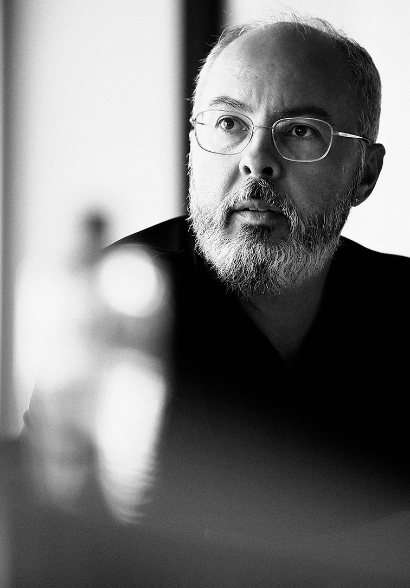
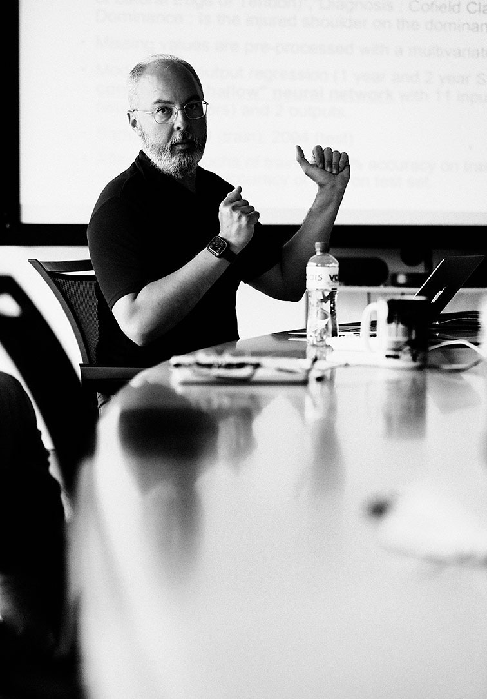
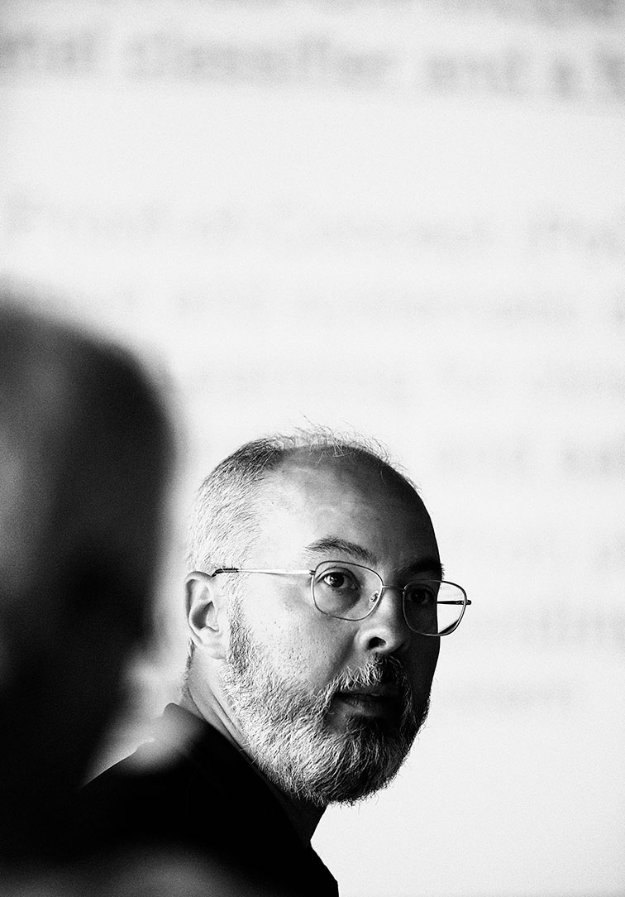
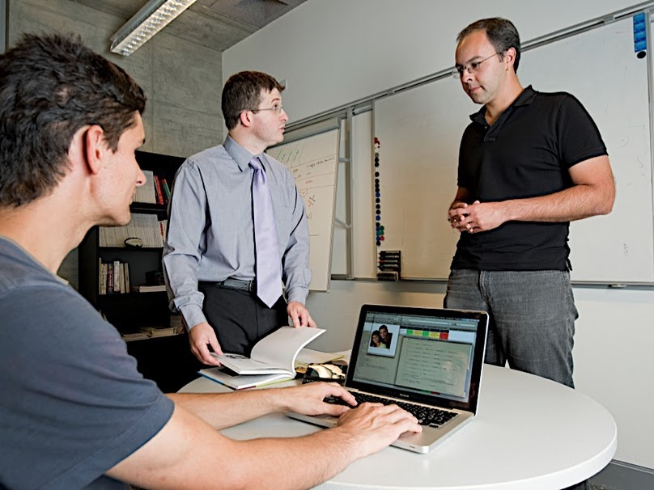
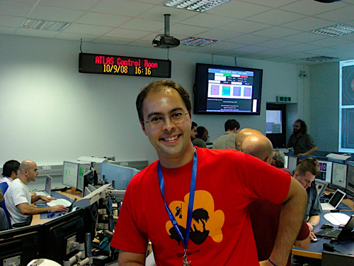
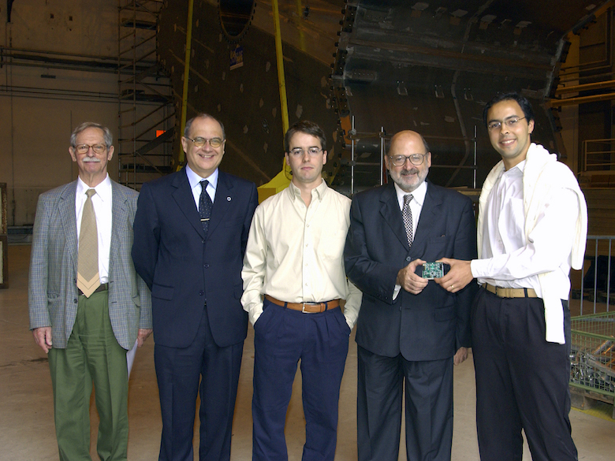

About me
My name is André (Rabello dos) Anjos. I'm Scientific Researcher at the Idiap Research Institute located in the nice town of Martigny, Wallis, Switzerland. Here, I conduct Reproducible Research in Computer Vision and Machine Learning applied to medical data. My other research interests are Biometrics, Pattern Classification, Signal Processing, and Computing. Previously, I used to work for the University of Wisconsin, Madison, USA at CERN, Switzerland, as a Software Engineer for at the ATLAS experiment. During that time, I was one of the responsibles for the development and maintenance the experiment's Trigger and Data-Acquisition system.
  I started studying electronics and computers in 1994, when I joined the Electronics Engineering School of the Federal University of Rio de Janeiro. I finished my basic electronic engineering studies in 1999, my masters degree in 2001, finally getting a Ph.D. in Signal Processing in 2006. During this time I have been affiliated to the Signal Processing Laboratory. I have studied different subjects during all these years ranging from digital filters to pattern recognition. Most of my research time during school years was dedicated to Artificial Neural Networks. I keep a record of all my publications in this website.
I'm a scientific researcher who is also passionate about software. Such a passion started around 1994, when I first joined the engineering school. I enjoy simplicity and powerful designs. I find it is quite hard to make something simple and strive to reach this goal in everything I do.
You can access my CV here. If you are interested in code, you can check-out my contributions on github or gitlab. Publications are available on my publications link. Specifically, if you wonder how this website was put together, you should take a look at that link.
  